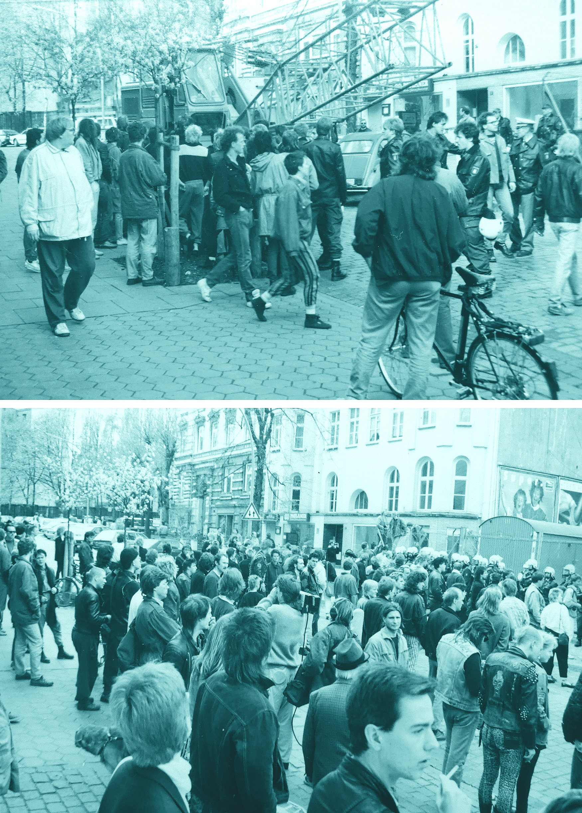

Atelier Schanze

Philipp,

Schulterblatt und Arzu,
Ungefähr 1985 bezog ich mein Atelier an der Schanze in Hamburg. Am Schulterblatt reihten sich damals noch viele kleine Läden geführt von wirklichen Originalen Hamburgs aneinander (Fischhändler, Elektrobedarf...).
Schulterblatt mit Arzu auf dem Hof zu den Nachbarn.
Die unmittelbaren Nachbarn waren Atze mit seiner Tischlerei, Franziska mit ihrer Restaurierung, ein TV-Requisiteur, ein Kfz-Schrauber, ein perfektionierter Edelstahlblechner. Einige bauten Rahmen für mich.

Gepresste Blumen,
Schulterblatt,

Schulterblatt,

Foto von Demos
Dann brachen Jahre im Kampf um das alte Flora-Theater herein. Der erste Abrisszustich am Altbau setzte unmittelbar meinen Atelier gegenüber ein.
Jeanette auf dem Schulterblatt,